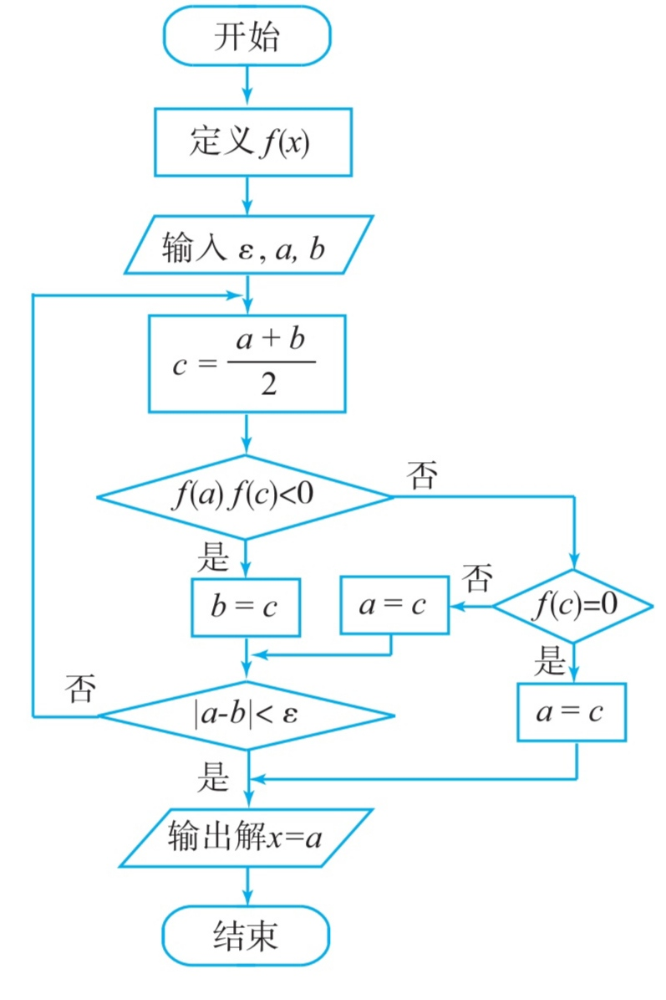

二分法求零点--Python实战
前言
前几天在数学必修一上发现了用信息技术和二分法求函数零点的流程图（如下图）,我就用Python开发了这样一个程序

功能实现
分析可得，图中有a-b的绝对值，先写一个求a-b的绝对值的函数
def absolute(a,b): #a-b的绝对值 if a - b >= 0: x = a - b else: x = b - a return x
求零点先要有个函数，定义一个函数f(x)
def f(x): #f(x)表达式 y = x-3 return y
主逻辑实现
output = "" while output == "": #求零点 c = (a + b) /2 #取区间的中点 if f(a) * f(c) < 0: #看区间的前半段是否存在零点 b = c if absolute(a,b) < e: #检验结果是否符合精确度 output = a print("x=",output) else: #若区间的前半段不存在零点，则 if f(c) == 0: #计算区间的中点是否为零点 output = c print("x=",output) else: #接着算后半段是否存在零点 a = c if absolute(a,b) < e: output = a print("x=",output) if output != "": print("将X的值代入表达式得，函数值为",f(float(output)))
完整代码如下
a = float(input("a ")) b = float(input("b ")) #取值区间为(a,b) e = float(input("ε ")) #精确度 def f(x): #f(x)表达式 y = x-3 return y def absolute(a,b): #a-b的绝对值 if a - b >= 0: x = a - b else: x = b - a return x output = "" while output == "": #求零点 c = (a + b) /2 #取区间的中点 if f(a) * f(c) < 0: #看区间的前半段是否存在零点 b = c if absolute(a,b) < e: #检验结果是否符合精确度 output = a print("x=",output) else: #若区间的前半段不存在零点，则 if f(c) == 0: #计算区间的中点是否为零点 output = c print("x=",output) else: #接着算后半段是否存在零点 a = c if absolute(a,b) < e: output = a print("x=",output) if output != "": print("将X的值代入表达式得，函数值为",f(float(output)))
异常处理
考虑与用户交互的地方只有获取a,b,ε的值，所以只需在input函数前加上try语句，在之后加except和else语句。同时为使引发错误后重新获取a,b,ε的值，在最前面再加上while循环
之后我们再稍微润色润色代码，最终如下［这种写法比没有main()运行1万次快0.2秒（测试环境：Pydroid3）］
def main(): #import math print("""说明 本程序利用二分法求函数零点，请输入区间(a,b)的左右端点a,b和精确度ε。 为确保结果准确，所输入的a,b所对应的函数值最好为一正一负。""") while True: try: #异常处理 a = float(input("a ")) b = float(input("b ")) #取值区间为(a,b) e = float(input("ε ")) #精确度 except: print("非法的输入,请重新输入") else: #若无异常，则执行以下代码 def f(x): #f(x)表达式 y = x-3 return y def absolute(a,b): #a-b的绝对值 if a - b >= 0: x = a - b else: x = b - a return x output = "" while output == "": #求零点 c = (a + b) /2 #取区间的中点 if f(a) * f(c) < 0: #看区间的前半段是否存在零点 b = c if absolute(a,b) < e: #检验结果是否符合精确度 output = a print("x=",output) else: #若区间的前半段不存在零点，则 if f(c) == 0: #计算区间的中点是否为零点 output = c print("x=",output) else: #接着算后半段是否存在零点 a = c if absolute(a,b) < e: output = a print("x=",output) if output != "": print("将X的值代入表达式得，函数值为",f(float(output))) break #结束引发异常后使其继续能够输入的while循环。 if __name__ == '__main__': main()
Posted 2022-11-25 15:24 写bug的代码人